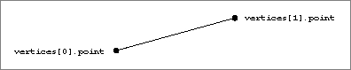

Lines
A line is a straight segment in three-dimensional space defined by its two endpoints, with an optional set of attributes. (In addition, each vertex can have a set of attributes.) A line is defined by theTQ3LineDatadata type. See "Creating and Editing Lines," beginning on page 4-63 for a description of the routines you can use to create and edit lines. Figure 4-10 shows a line.
typedef struct TQ3LineData { TQ3Vertex3D vertices[2]; TQ3AttributeSet lineAttributeSet; } TQ3LineData;
Field Description
vertices- An array of two vertices.
lineAttributeSet- A set of attributes for the line. The value in this field is
NULLif no line attributes are defined.